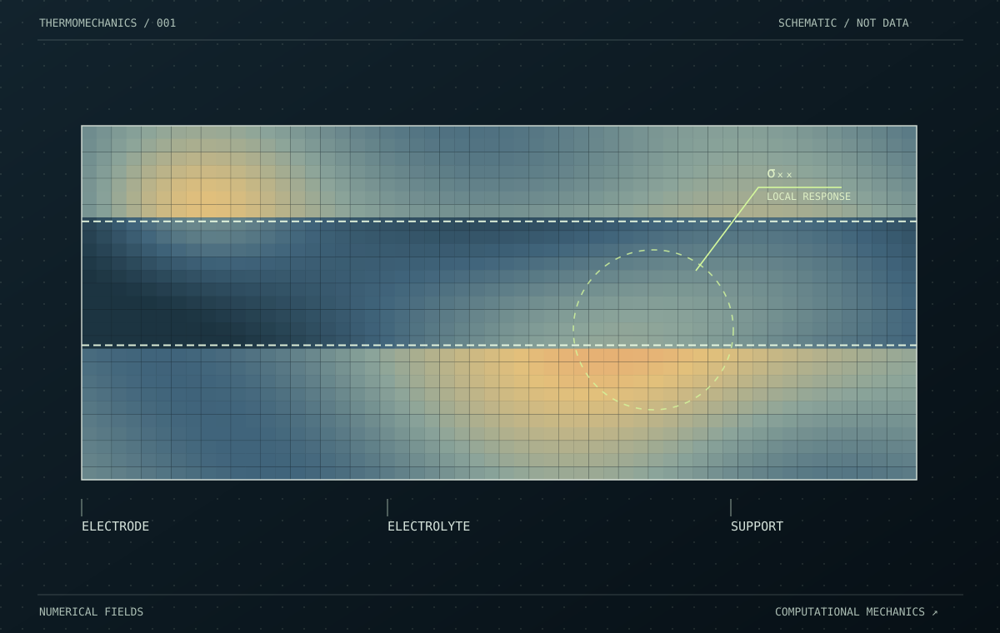
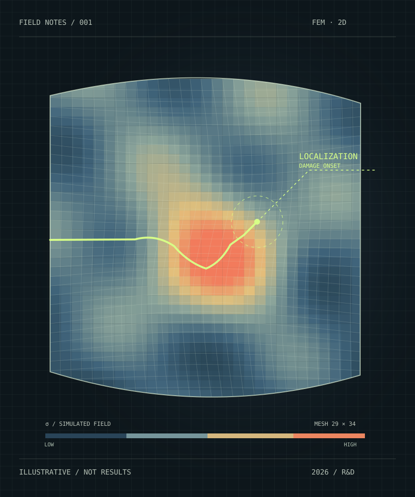
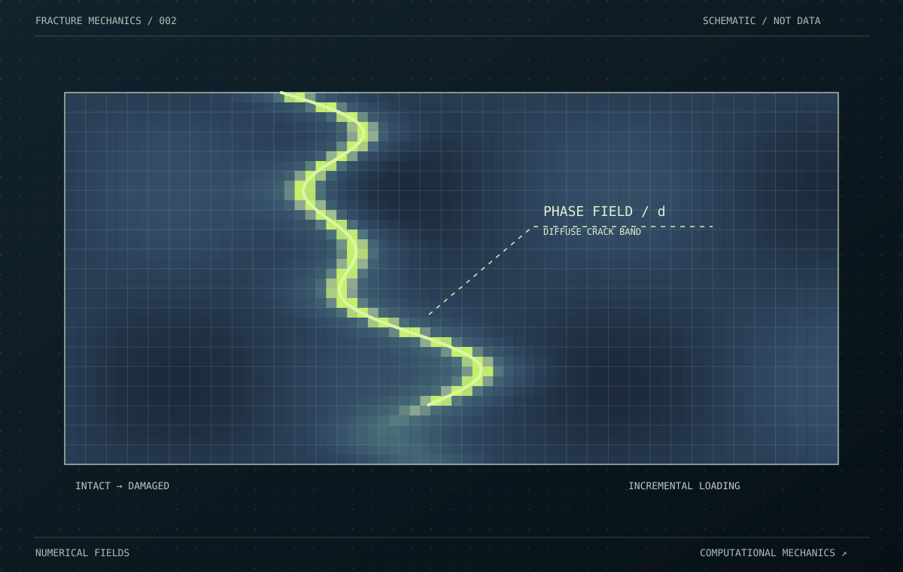
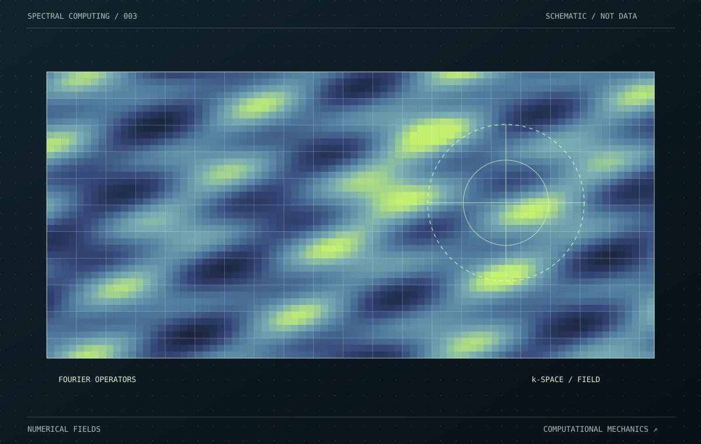

01 / SELECTED WORKThermal stress in layered cells
Thermal mismatch, residual stress, and multilayer mechanics in electrochemical cells.
Explore the caseI develop numerical models to understand how materials respond, evolve, and fail under coupled physical fields.

Problems at the intersection of continuum mechanics, materials, and computation. Detailed case studies are ready for your own validated results.

01 / SELECTED WORKThermal mismatch, residual stress, and multilayer mechanics in electrochemical cells.
Explore the case
02 / SELECTED WORKNonlinear mechanics, damage evolution, and numerical convergence for fracture.
Explore the case
03 / SELECTED WORKSpectral discretization and iterative field solvers for spatially varying materials.
Explore the caseThermal mismatch · Residual stress · Inelasticity
Phase-field · Cohesive interfaces · Crack growth
Thermo-chemo-mechanical coupling · Electrochemical materials
Python · MATLAB · C++ · Sparse numerical solvers
My work explores the mechanics of materials and structures under coupled thermal, chemical, and mechanical loading. I am especially interested in the transition from stress development to damage and fracture.
I enjoy connecting physical models with reliable numerical implementations: finite element formulations, nonlinear equilibrium solvers, sparse linear algebra, and clear scientific visualizations.
Interested in simulation, advanced materials, or a challenging engineering problem? I'd love to talk.
lsy88527@outlook.com